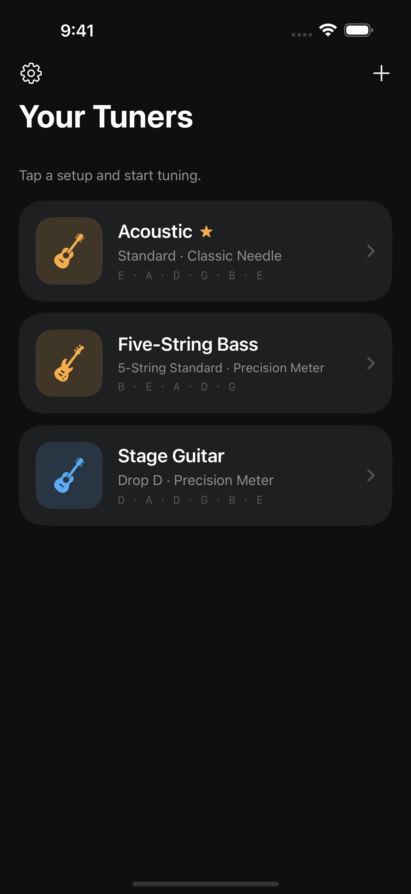
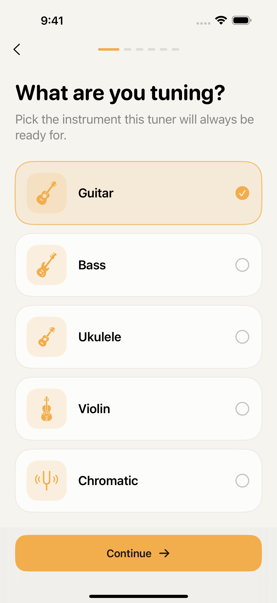

Free
Two saved tuners
- Two saved tuners
- Every built-in preset, including Drop D and DADGAD
- Chromatic mode
- Classic Needle and Precision Meter
No ads. No MultiTuner account.
MultiTuner for iPhone
Built-in presets, chromatic tuning and two free saved tuners. No ads or MultiTuner account.
Built-in tunings are free. No subscription required to tune.
Coming to the App Store · iPhone · iOS 17+


GuitarBassUkuleleViolinChromatic
Free guitar tuning finder
Choose your starting and target tuning. See which strings move, which stay put, and the exact note for each one.
Compare guitar tuningsEight tunings · Flat or sharp note names · String-by-string changes
STANDARD DROP D
One string changes. The other five stay put.

Choose guitar, four- or five-string bass, ukulele or violin. Use built-in presets for the tuning you want, or choose chromatic mode to follow any note you play.
Play one clear note at a time. Check its target, then follow the guidance to tune up, tune down, or know when you’re in tune. Choose Classic Needle or Precision Meter; both are included free.
All built-in presets are included in Free.
Give each tuner a name and color, save its tuning and display, then open the setup you need in a tap. Keep two saved tuners free. Premium makes room for a larger library and your own custom tunings.
Either of your two free tuners can be your default.
No trial or purchase required for the built-in tunings.
Free
No ads. No MultiTuner account.
MultiTuner Premium
Weekly, yearly or one-time lifetime purchase.
Plans and local prices appear in the app before purchase. Subscriptions renew automatically unless canceled. Purchase terms.
All built-in presets are free within your two saved tuners, including Drop D, D Standard, Open G, Open D and DADGAD. Chromatic mode is also free. Creating or changing custom target notes, and transposing custom tunings, requires Premium.
Use free chromatic mode to follow those notes. They are not built-in presets; creating a saved custom preset with those targets requires Premium. Find the notes and string changes.
Every setup stays saved. The first two remain available, and additional tuners unlock again if Premium returns. An available default stays your default; otherwise MultiTuner opens the first available tuner.
Yes. The free reference-pitch controls cover 400–480 Hz and include quick choices for 432, 440 and 442 Hz, plus a held reference test tone. Read about reference pitch.
MultiTuner analyzes microphone audio on your device without saving recordings or uploading audio. Your saved tuners stay local.
Read the Privacy PolicyString notes and instructions for common guitar tunings.